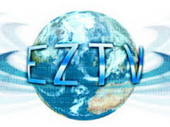
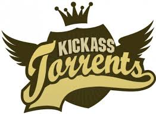
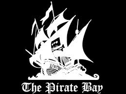

EZTV
EZTV is the name of a TV torrent distribution group founded in May 2005 as a response to the forced disappearance of TVTorrents.tv and btefnet via lawsuit.[2][3] The group was founded by a loose coalition of volunteers and holds no formal ties to its predecessors. This website is a great option to find current and old TV shows.
Show me EZTVKickass
KickassTorrents or KAT is a torrent search engine launched in 2008 and is operated by a dedicated team spread all over the globe. KickassTorrents is not a tracker and hosts no content, we provide only access to already available torrents in a same way Google and other search engines do. One of the things that we are most proud of is our large and friendly community and Mod Crew. The main goal of KickassTorrents is to provide users with a user-friendly interface that will make search of torrents easier and more organized. But also we do our best to establish a new high standard for torrent sites and lead the whole community of p2p users into a new era. This website has a variety of torrents from old to new movies and TV shows.
Show me KickassPirate Bay
The Pirate Bay is the worlds largest bittorrent tracker. Bittorrent is a filesharing protocol that in a reliable way enables big and fast file transfers. This is an open tracker, where anyone can download torrent files. To be able to upload torrent files, write comments and personal messages one must register at the site. This is of course free. This website has everything from movies, TV shows, computer programs and books available for torrent download.
Show me Pirate Bay